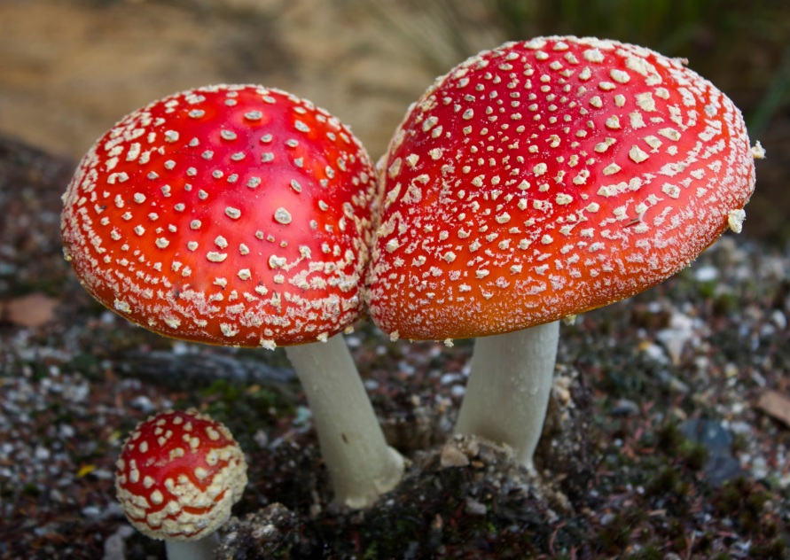
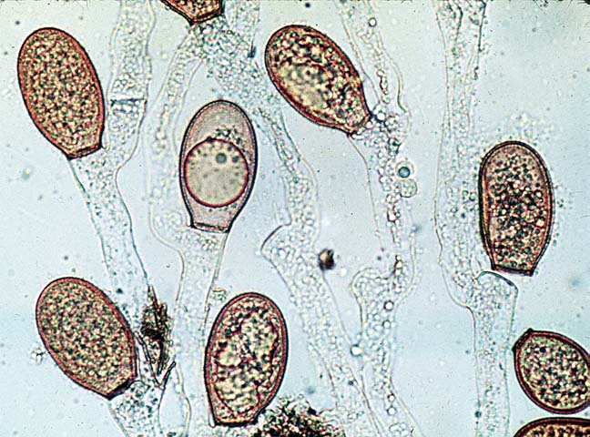
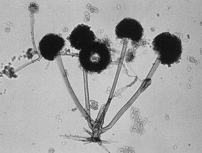
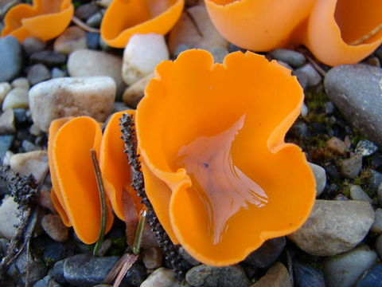
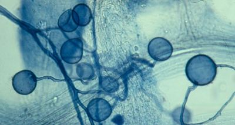

Fungi Classification

Fungi are eukaryotic, non-photosynthetic organisms with cell walls made of chitin. They play essential roles as decomposers, mutualists, or pathogens.
Fungi classification is typically done using a hierarchical system, with the Kingdom Fungi being divided into phyla (or divisions) based on their unique characteristics, such as spore production, reproductive structures, and growth habits.
Fungi are majorly classified into 6 types:
i.Chytridiomycota (Chytrids):

Chytridiomycota, often referred to as chytrids, are a phylum of fungi distinguished by their unique zoospores with a single, posterior flagellum.
These simple fungi are primarily aquatic or found in moist environments and can be saprobes, parasites, or even cause diseases in animals, including amphibians.
ii.Zygomycota (Conjugate Fungi):

Zygomycota fungi, often called conjugation fungi or bread molds, are characterized by coenocytic hyphae, a lack of septa (cell walls), and a unique mode of sexual reproduction involving zygospores.
They exhibit both asexual and sexual reproduction, with asexual reproduction primarily occurring through sporangiospores.
iii.Ascomycota (Sac Fungi):

Ascomycota, commonly known as sac fungi, are a diverse group of fungi characterized by the presence of a sac-like reproductive structure called an ascus.
This phylum includes a wide variety of organisms, from yeasts to more complex cup fungi, and is known for its diverse roles, including being saprobes, parasites, and forming lichens.
iv.Basidiomycota (Club Fungi):
.jpg)
Basidiomycota, commonly known as club fungi, are a major group of fungi characterized by the presence of club-shaped reproductive structures called basidia.
These basidia are responsible for producing basidiospores, which are essential for sexual reproduction.
They include a diverse range of fungi, including mushrooms, puffballs, rusts, smuts, and more.
v.Glomeromycota:

Glomeromycota, also known as arbuscular mycorrhizal fungi (AMF), form a crucial part of the mycorrhizal symbiosis with plants.
These fungi are essential for plant nutrient uptake, particularly phosphorus, and play a significant role in soil health and plant growth.
Mycorrhizae are symbiotic relationships between fungi and plant roots, and Glomeromycota fungi are the primary drivers of arbuscular mycorrhizae, a type of mycorrhizal association.
vi.Deuteromycota (Imperfect Fungi):
.jpg)
Imperfect fungi, also known as Deuteromycota, are characterized by their lack of a known sexual reproductive stage.
They reproduce primarily through asexual means like fragmentation, budding, or the formation of conidia.
While they exhibit similar features to other fungal groups like sac and club fungi in their mycelial structure and asexual spore production, their absence of a sexual phase distinguishes them.